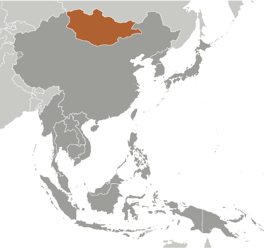
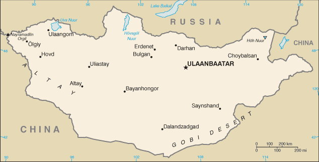
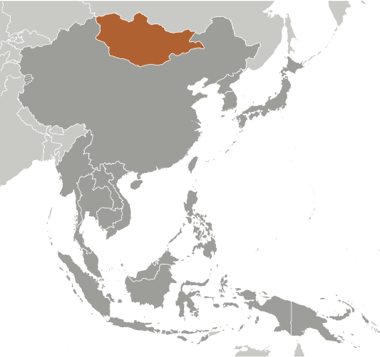
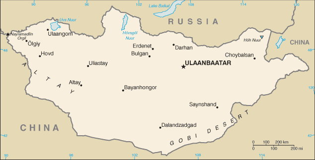

East & Southeast Asia :: MONGOLIA
Introduction :: MONGOLIA
-
The Mongols gained fame in the 13th century when under Chinggis KHAAN they established a huge Eurasian empire through conquest. After his death the empire was divided into several powerful Mongol states, but these broke apart in the 14th century. The Mongols eventually retired to their original steppe homelands and in the late 17th century came under Chinese rule. Mongolia declared its independence from the Manchu-led Qing Empire in 1911 and achieved limited autonomy until 1919, when it again came under Chinese control. The Mongolian Revolution of 1921 ended Chinese dominance, and a communist regime, the Mongolian People’s Republic, took power in 1924.The modern country of Mongolia, however, represents only part of the Mongols' historical homeland; today, more ethnic Mongolians live in the Inner Mongolia Autonomous Region in the People's Republic of China than in Mongolia. Since the country's peaceful democratic revolution in 1990, the ex-communist Mongolian People's Revolutionary Party (MPRP) - which took the name Mongolian People’s Party (MPP) in 2010 - has competed for political power with the Democratic Party (DP) and several other smaller parties, including a new party formed by former President ENKHBAYAR, which confusingly adopted for itself the MPRP name. In the country's most recent parliamentary elections in June 2016, Mongolians handed the MPP overwhelming control of Parliament, largely pushing out the DP, which had overseen a sharp decline in Mongolia’s economy during its control of Parliament in the preceding years. President ELBEGDORJ, a DP member, will finish his second term as president in 2017, and is not eligible to run for re-election.
Geography :: MONGOLIA
-
Northern Asia, between China and Russia46 00 N, 105 00 EAsiatotal: 1,564,116 sq kmland: 1,553,556 sq kmwater: 10,560 sq kmcountry comparison to the world: 20slightly smaller than Alaska; more than twice the size of Texastotal: 8,082 kmborder countries (2): China 4,630 km, Russia 3,452 km0 km (landlocked)none (landlocked)desert; continental (large daily and seasonal temperature ranges)vast semidesert and desert plains, grassy steppe, mountains in west and southwest; Gobi Desert in south-centralmean elevation: 1,528 melevation extremes: lowest point: Hoh Nuur 560 mhighest point: Nayramadlin Orgil (Khuiten Peak) 4,374 moil, coal, copper, molybdenum, tungsten, phosphates, tin, nickel, zinc, fluorspar, gold, silver, ironagricultural land: 73%arable land 0.4%; permanent crops 0%; permanent pasture 72.6%forest: 7%other: 20% (2011 est.)840 sq km (2012)sparsely distributed population throughout the country; the capital of Ulaanbaatar and the northern city of Darhan support the highest population densitiesdust storms; grassland and forest fires; drought; "zud," which is harsh winter conditionslimited natural freshwater resources in some areas; the policies of former Communist regimes promoted rapid urbanization and industrial growth that had negative effects on the environment; the burning of soft coal in power plants and the lack of enforcement of environmental laws severely polluted the air in Ulaanbaatar; deforestation, overgrazing, and the converting of virgin land to agricultural production increased soil erosion from wind and rain; desertification and mining activities had a deleterious effect on the environmentparty to: Biodiversity, Climate Change, Climate Change-Kyoto Protocol, Desertification, Endangered Species, Environmental Modification, Hazardous Wastes, Law of the Sea, Ozone Layer Protection, Ship Pollution, Wetlands, Whalingsigned, but not ratified: none of the selected agreementslandlocked; strategic location between China and Russia
People and Society :: MONGOLIA
-
3,068,243note: Mongolia is one of the least densely populated countries in the world (2 people per sq km); twice as many ethnic Mongols (some 6 million) live in Inner Mongolia (Nei Mongol) in neighboring China (July 2017 est.)country comparison to the world: 135noun: Mongolian(s)adjective: MongolianKhalkh 81.9%, Kazak 3.8%, Dorvod 2.7%, Bayad 2.1%, Buryat-Bouriates 1.7%, Zakhchin 1.2%, Dariganga 1%, Uriankhai 1%, other 4.6% (2010 est.)Mongolian 90% (official) (Khalkha dialect is predominant), Turkic, Russian (1999)Buddhist 53%, Muslim 3%, Shamanist 2.9%, Christian 2.2%, other 0.4%, none 38.6% (2010 est.)0-14 years: 26.95% (male 421,675/female 405,298)15-24 years: 16.09% (male 249,805/female 243,784)25-54 years: 45.6% (male 677,679/female 721,435)55-64 years: 7.07% (male 99,099/female 117,818)65 years and over: 4.29% (male 53,364/female 78,286) (2017 est.)total dependency ratio: 48.5youth dependency ratio: 42.7elderly dependency ratio: 5.8potential support ratio: 17.3 (2015 est.)total: 28.3 yearsmale: 27.5 yearsfemale: 29.2 years (2017 est.)country comparison to the world: 1341.18% (2017 est.)country comparison to the world: 9418.9 births/1,000 population (2017 est.)country comparison to the world: 886.3 deaths/1,000 population (2017 est.)country comparison to the world: 152-0.8 migrant(s)/1,000 population (2017 est.)country comparison to the world: 132sparsely distributed population throughout the country; the capital of Ulaanbaatar and the northern city of Darhan support the highest population densitiesurban population: 73.6% of total population (2017)rate of urbanization: 2.23% annual rate of change (2015-20 est.)ULAANBAATAR (capital) 1.377 million (2015)at birth: 1.05 male(s)/female0-14 years: 1.04 male(s)/female15-24 years: 1.02 male(s)/female25-54 years: 0.94 male(s)/female55-64 years: 0.85 male(s)/female65 years and over: 0.69 male(s)/femaletotal population: 0.96 male(s)/female (2016 est.)20.5 yearsnote: median age at first birth among women 20-24 (2008 est.)44 deaths/100,000 live births (2015 est.)country comparison to the world: 101total: 21.1 deaths/1,000 live birthsmale: 24.2 deaths/1,000 live birthsfemale: 17.9 deaths/1,000 live births (2017 est.)country comparison to the world: 79total population: 69.9 yearsmale: 65.7 yearsfemale: 74.4 years (2017 est.)country comparison to the world: 1602.09 children born/woman (2017 est.)country comparison to the world: 10754.6% (2013)4.7% of GDP (2014)country comparison to the world: 1532.88 physicians/1,000 population (2011)6.8 beds/1,000 population (2012)improved:urban: 66.4% of populationrural: 59.2% of populationtotal: 64.4% of populationunimproved:urban: 33.6% of populationrural: 40.8% of populationtotal: 35.6% of population (2015 est.)improved:urban: 66.4% of populationrural: 42.6% of populationtotal: 59.7% of populationunimproved:urban: 33.6% of populationrural: 57.4% of populationtotal: 40.3% of population (2015 est.)<.1% (2016 est.)<500 (2016 est.)<100 (2016 est.)20.6% (2016)country comparison to the world: 961.6% (2013)country comparison to the world: 924.6% of GDP (2011)country comparison to the world: 58definition: age 15 and over can read and writetotal population: 98.4%male: 98.2%female: 98.6% (2015 est.)total: 15 yearsmale: 14 yearsfemale: 16 years (2015)total: 17.9%male: 16.8%female: 19.4% (2015 est.)country comparison to the world: 92
Government :: MONGOLIA
-
conventional long form: noneconventional short form: Mongolialocal long form: nonelocal short form: Mongol Ulsformer: Outer Mongoliaetymology: the name means "Land of the Mongols" in Latin; the Mongolian name Mongol Uls translates as "Mongol State"semi-presidential republicname: Ulaanbaatargeographic coordinates: 47 55 N, 106 55 Etime difference: UTC+8 (13 hours ahead of Washington, DC, during Standard Time)daylight saving time: +1hr, begins last Saturday in March; ends last Saturday in Septembernote: Mongolia has two time zones - Ulaanbaatar Time (8 hours in advance of UTC) and Hovd Time (7 hours in advance of UTC)21 provinces (aymguud, singular - aymag) and 1 municipality* (singular - hot); Arhangay, Bayanhongor, Bayan-Olgiy, Bulgan, Darhan-Uul, Dornod, Dornogovi, Dundgovi, Dzavhan (Zavkhan), Govi-Altay, Govisumber, Hentiy, Hovd, Hovsgol, Omnogovi, Orhon, Ovorhangay, Selenge, Suhbaatar, Tov, Ulaanbaatar*, Uvs29 December 1911 (independence declared from China; in actuality, autonomy attained); 11 July 1921 (from China)Naadam (games) holiday (commemorates independence from China in the 1921 Revolution), 11-15 July; Constitution Day (marks the date that the Mongolian People's Republic was created under a new constitution), 26 November (1924)history: several previous; latest adopted 13 January 1992, effective 12 February 1992amendments: proposed by the State Great Hural, by the president of the republic, by the government, or by petition submitted to the State Great Hural by the Constitutional Court; conducting referenda on proposed amendments requires at least two-thirds majority vote of the State Great Hural; passage of amendments by the State Great Hural requires at least three-quarters majority vote; passage by referendum requires majority participation of qualified voters and a majority of votes; amended 1999, 2001 (2017)civil law system influenced by Soviet and Romano-Germanic legal systems; constitution ambiguous on judicial review of legislative actshas not submitted an ICJ jurisdiction declaration; accepts ICCt jurisdictioncitizenship by birth: nocitizenship by descent only: both parents must be citizens of Mongolia; one parent if born within Mongoliadual citizenship recognized: noresidency requirement for naturalization: 5 years18 years of age; universalchief of state: President Khaltmaa BATTULGA (since 10 July 2017)head of government: Prime Minister Ukhnaa KHURELSUKH (since 4 October 2017); Deputy Prime Minister Ulziisaikhan ENKHTUVSHUN (since 18 October 2017); note - Prime Minister Jargaltulga ERDENEBAT (since 8 July 2016) was voted out of office by the Parliament on 7 September 2017cabinet: Cabinet nominated by the prime minister in consultation with the president, confirmed by the State Great Hural (parliament)elections/appointments: presidential candidates nominated by political parties represented in the State Great Hural and directly elected by simple majority popular vote for a 4-year term (eligible for a second term); election last held on 26 June 2017 and 9 July 2017 (next to be held in 2021); following legislative elections, the leader of the majority party or majority coalition usually elected prime minister by the State Great Huralelection results: Khaltmaa BATTULGA elected president; percent of vote in first round - Khaltmaa BATTULGA (DP) 38.1%, Miyegombo ENKHBOLD (MPP) 30.3%, Sainkhuu GANBAATAR (MPRP) 30.2%, invalid 1.4%; percent of vote in second round Khaltmaa BATTULGA 55.2%, Miyegombo ENKHBOLD 44.8%description: unicameral State Great Hural or Ulsyn Ikh Khural (76 seats; members directly elected in single-seat constituencies by simple majority vote; each constituency requires at least 50% voter participation for the poll to be valid; members serve 4-year terms)elections: last held on 29 June 2016 (next to be held in June 2020)election results: percent of vote by party - MPP 45.1%, DP 33.1%, MPRP 8.0%, independent 4.8%, other 9.0%; seats by party - MPP 65, DP 9, MPRP 1, independent 1highest court(s): Supreme Court (consists of the Chief Justice and 24 judges organized into civil, criminal, and administrative chambers); Constitutional Court or Tsets (consists of a chairman and 8 members)judge selection and term of office: Supreme Court chief justice and judges appointed by the president upon recommendation to the State Great Hural by the General Council of Courts, a 14-member body of judges and judicial officials; term of appointment is for life; chairman of the Constitutional Court elected from among its members; members appointed by the State Great Hural upon nominations - 3 each by the president, the State Great Hural, and the Supreme Court; term of appointment is 6 years; chairmanship limited to a single renewable 3-year termsubordinate courts: aimag (provincial) and capital city appellate courts; soum, inter-soum, and district courts; Administrative Cases CourtsCivil Will-Green Party or CWGP [Sanjaasuren OYUN and Tserendorj GANKHUYAG]Democratic Party or DP [Sodnomzundui ERDENE]Mongolian National Democratic Party or MNDP [Mendsaikhan ENKHSAIKHAN]Mongolian People's Party or MPP [Miyegombo ENKHBOLD]Mongolian People's Revolutionary Party or MPRP [Nambar ENKHBAYAR]human rights groups; women's rights groups; disability rights groupsADB, ARF, CD, CICA, CP, EBRD, EITI (compliant country), FAO, G-77, IAEA, IBRD, ICAO, ICC (NGOs), ICCt, ICRM, IDA, IFAD, IFC, IFRCS, ILO, IMF, IMO, IMSO, Interpol, IOC, IOM, IPU, ISO, ITSO, ITU, ITUC, MIGA, MINURSO, MONUSCO, NAM, OPCW, OSCE, SCO (observer), UN, UNAMID, UNCTAD, UNESCO, UNIDO, UNISFA, UNMISS, UNWTO, UPU, WCO, WHO, WIPO, WMO, WTOchief of mission: Ambassador Bulgaa ALTANGEREL (since 14 January 2013)chancery: 2833 M Street NW, Washington, DC 20007telephone: [1] (202) 333-7117FAX: [1] (202) 298-9227consulate(s) general: New York, San Franciscochief of mission: Ambassador Jennifer Zimdahl GALT (since 5 October 2015)embassy: Denver Streetmailing address: P.O. Box 341, Ulaanbaatar 14192telephone: [976] 7007-6001FAX: [976] 7007-6016three, equal vertical bands of red (hoist side), blue, and red; centered on the hoist-side red band in yellow is the national emblem ("soyombo" - a columnar arrangement of abstract and geometric representation for fire, sun, moon, earth, water, and the yin-yang symbol); blue represents the sky, red symbolizes progress and prosperitysoyombo emblem; national colors: red, blue, yellowname: "Mongol ulsyn toriin duulal" (National Anthem of Mongolia)lyrics/music: Tsendiin DAMDINSUREN/Bilegiin DAMDINSUREN and Luvsanjamts MURJORJnote: music adopted 1950, lyrics adopted 2006; lyrics altered on numerous occasions
Economy :: MONGOLIA
-
Foreign direct investment in Mongolia's extractive industries – which are based on extensive deposits of copper, gold, coal, molybdenum, fluorspar, uranium, tin, and tungsten - has transformed Mongolia's landlocked economy from its traditional dependence on herding and agriculture. Exports now account for more than 40% of GDP. Mongolia depends on China for more than 60% of its external trade - China receives some 90% of Mongolia's exports and supplies Mongolia with more than one-third of its imports. Mongolia also relies on Russia for 90% of its energy supplies, leaving it vulnerable to price increases. Remittances from Mongolians working abroad, particularly in South Korea, are significant.Soviet assistance, at its height one-third of GDP, disappeared almost overnight in 1990 and 1991 at the time of the dismantlement of the USSR. The following decade saw Mongolia endure both deep recession, because of political inaction, and natural disasters, as well as strong economic growth, because of market reforms and extensive privatization of the formerly state-run economy. The country opened a fledgling stock exchange in 1991. Mongolia joined the WTO in 1997 and seeks to expand its participation in regional economic and trade regimes.Growth averaged nearly 9% per year in 2004-08 largely because of high copper prices globally and new gold production. By late 2008, Mongolia was hit by the global financial crisis and Mongolia's real economy contracted 1.3% in 2009. In early 2009, the IMF reached a $236 million Stand-by Arrangement with Mongolia and it emerged from the crisis with a stronger banking sector and better fiscal management. In October 2009, Mongolia passed long-awaited legislation on an investment agreement to develop the Oyu Tolgoi (OT) mine, among the world's largest untapped copper-gold deposits. However, a dispute with foreign investors developing OT called into question the attractiveness of Mongolia as a destination for foreign investment. This caused a severe drop in FDI, and a slowing economy, leading to the dismissal of Prime Minister ALTANKHUYAG in November 2014. The economy had grown more than 10% per year between 2011 and 2013 - largely on the strength of commodity exports and high government spending - before slowing to 7.8% in 2014, 2.3% in 2015, and 1% in 2016.The May 2015 agreement with Rio Tinto to restart the OT mine and the subsequent $4.4 billion finance package signing in December 2015 stemmed the loss of investor confidence. The current government has made restoring investor trust and reviving the economy its top priority, but has failed to invigorate the economy in the face of the large dropoff in foreign direct investment, mounting external debt, and a sizeable budget deficit. However, Mongolia reached staff-level agreement with the IMF in February 2017 on an Extended Fund Facility program, and once approved by the IMF Board, the program is expected to improve Mongolia’s long-term fiscal and economic stability.$36.99 billion (2016 est.)$36.17 billion (2015 est.)$34.96 billion (2014 est.)note: data are in 2016 dollarscountry comparison to the world: 120$11.03 billion (2016 est.)1% (2016 est.)2.4% (2015 est.)7.9% (2014 est.)country comparison to the world: 175$12,300 (2016 est.)$12,300 (2015 est.)$12,200 (2014 est.)note: data are in 2016 dollarscountry comparison to the world: 12125.9% of GDP (2016 est.)21.1% of GDP (2015 est.)23.4% of GDP (2014 est.)country comparison to the world: 65household consumption: 53.3%government consumption: 14.5%investment in fixed capital: 20.1%investment in inventories: 8.2%exports of goods and services: 50.8%imports of goods and services: -46.8% (2016 est.)agriculture: 13.3%industry: 35.3%services: 51.4% (2016 est.)wheat, barley, vegetables, forage crops; sheep, goats, cattle, camels, horsesconstruction and construction materials; mining (coal, copper, molybdenum, fluorspar, tin, tungsten, gold); oil; food and beverages; processing of animal products, cashmere and natural fiber manufacturing-1.2% (2016 est.)country comparison to the world: 1711.24 million (2016 est.)country comparison to the world: 137agriculture: 31.1%industry: 18.5%services: 50.5% (2016)7.9% (2016 est.)8.3% (2015 est.)country comparison to the world: 10721.6% (2014 est.)lowest 10%: 13.8%highest 10%: 8.8% (2016)36.5 (2008)32.8 (2002)country comparison to the world: 85revenues: $2.775 billionexpenditures: $4.448 billion (2016 est.)25.2% of GDP (2016 est.)country comparison to the world: 117-15.2% of GDP (2016 est.)country comparison to the world: 21090% of GDP (2016 est.)77.4% of GDP (2015 est.)country comparison to the world: 25calendar year0.6% (2016 est.)5.8% (2015 est.)country comparison to the world: 7112% (14 January 2016 )13% (15 January 2015)country comparison to the world: 1519.74% (31 December 2016 est.)19.56% (31 December 2015 est.)country comparison to the world: 15$839.6 million (31 December 2016 est.)$844.4 million (31 December 2015 est.)country comparison to the world: 158$4.851 billion (31 December 2016 est.)$5.035 billion (31 December 2015 est.)country comparison to the world: 127$7.326 billion (31 December 2016 est.)$8.048 billion (31 December 2015 est.)country comparison to the world: 115$632.6 million (31 December 2015 est.)$766.1 million (31 December 2014 est.)$1.095 billion (31 December 2013 est.)country comparison to the world: 110$-700 million (2016 est.)$-948.5 million (2015 est.)country comparison to the world: 110$4.804 billion (2016 est.)$4.447 billion (2015 est.)country comparison to the world: 106copper, apparel, livestock, animal products, cashmere, wool, hides, fluorspar, other nonferrous metals, coal, crude oilChina 84.1%, UK 6.8% (2016)$3.466 billion (2016 est.)$3.884 billion (2015 est.)country comparison to the world: 136machinery and equipment, fuel, cars, food products, industrial consumer goods, chemicals, building materials, cigarettes and tobacco, appliances, soap and detergentChina 33.2%, Russia 25.6%, South Korea 8.6%, Japan 7% (2016)$19.79 billion (31 December 2016 est.)$21.54 billion (31 December 2015 est.)country comparison to the world: 92$16.28 billion (31 December 2016 est.)$20.7 billion (31 December 2015 est.)country comparison to the world: 84$455.2 million (31 December 2016 est.)$439.5 million (31 December 2015 est.)country comparison to the world: 92togrog/tugriks (MNT) per US dollar -2,140.3 (2016 est.)1,970.3 (2015 est.)1,970.3 (2014 est.)1,817.9 (2013 est.)1,357.6 (2012 est.)
Energy :: MONGOLIA
-
population without electricity: 300,000electrification - total population: 90%electrification - urban areas: 98%electrification - rural areas: 73% (2013)5.192 billion kWh (2015 est.)country comparison to the world: 1215.785 billion kWh (2015 est.)country comparison to the world: 11651 million kWh (2015 est.)country comparison to the world: 861.427 billion kWh (2015 est.)country comparison to the world: 611.106 million kW (2015 est.)country comparison to the world: 12694.9% of total installed capacity (2015 est.)country comparison to the world: 540% of total installed capacity (2015 est.)country comparison to the world: 1360% of total installed capacity (2015 est.)country comparison to the world: 1865.1% of total installed capacity (2015 est.)country comparison to the world: 9623,430 bbl/day (2016 est.)country comparison to the world: 6514,360 bbl/day (2014 est.)country comparison to the world: 560 bbl/day (2014 est.)country comparison to the world: 1560 bbl (1 January 2017)country comparison to the world: 1630 bbl/day (2014 est.)country comparison to the world: 16926,000 bbl/day (2015 est.)country comparison to the world: 1270 bbl/day (2014 est.)country comparison to the world: 17624,380 bbl/day (2014 est.)country comparison to the world: 1090 cu m (2013 est.)country comparison to the world: 1640 cu m (2013 est.)country comparison to the world: 2040 cu m (2013 est.)country comparison to the world: 1440 cu m (2013 est.)country comparison to the world: 1510 cu m (1 January 2014 es)country comparison to the world: 16714 million Mt (2013 est.)country comparison to the world: 94
Communications :: MONGOLIA
-
total subscriptions: 225,287subscriptions per 100 inhabitants: 7 (July 2016 est.)country comparison to the world: 125total: 3,367,573subscriptions per 100 inhabitants: 111 (July 2016 est.)country comparison to the world: 139general assessment: network is improving with international direct dialing available in many areas; a fiber-optic network has been installed that is improving broadband and communication services between major urban centers with multiple companies providing inter-city fiber-optic cable servicesdomestic: very low fixed-line teledensity; there are four mobile-cellular providers and subscribership is increasinginternational: country code - 976; satellite earth stations - 7 (2016)following a law passed in 2005, Mongolia's state-run radio and TV provider converted to a public service provider; also available are 69 radio and 131 TV stations, including multi-channel satellite and cable TV providers; transmissions of multiple international broadcasters are available (2017).mntotal: 674,949percent of population: 22.3% (July 2016 est.)country comparison to the world: 131
Transportation :: MONGOLIA
-
number of registered air carriers: 3inventory of registered aircraft operated by air carriers: 12annual passenger traffic on registered air carriers: 541,129annual freight traffic on registered air carriers: 7,130,148 mt-km (2015)JU (2016)44 (2013)country comparison to the world: 98total: 15over 3,047 m: 22,438 to 3,047 m: 101,524 to 2,437 m: 3 (2017)total: 29over 3,047 m: 22,438 to 3,047 m: 21,524 to 2,437 m: 24under 914 m: 1 (2013)1 (2013)total: 1,815 kmbroad gauge: 1,815 km 1.520-m gaugenote: national operator Ulaanbaatar Railway is jointly owned by the Mongolian Government and by the Russian State Railway (2016)country comparison to the world: 76total: 49,249 kmpaved: 4,800 kmunpaved: 44,449 km (2013)country comparison to the world: 79580 km (the only waterway in operation is Lake Hovsgol) (135 km); Selenge River (270 km) and Orhon River (175 km) are navigable but carry little traffic; lakes and rivers ice free from May to September) (2010)country comparison to the world: 81total: 57by type: bulk carrier 21, cargo 25, chemical tanker 1, container 2, liquefied gas 2, passenger/cargo 2, roll on/roll off 3, vehicle carrier 1foreign-owned: 44 (Indonesia 2, Japan 2, North Korea 1, Russia 2, Singapore 3, Ukraine 1, Vietnam 33) (2010)country comparison to the world: 69
Military and Security :: MONGOLIA
-
0.92% of GDP (2016)0.87% of GDP (2015)0.86% of GDP (2014)0.82% of GDP (2013)0.92% of GDP (2012)country comparison to the world: 90Mongolian Armed Forces (Mongol ulsyn zevsegt huchin): Mongolian Army, Mongolian Air Force (2016)18-27 years of age for compulsory and voluntary military service; 1-year conscript service obligation in land or air forces or police for males only; after conscription, soldiers can contract into military service for 2 or 4 years; citizens can also voluntarily join the armed forces (2015)
Transnational Issues :: MONGOLIA
-
nonestateless persons: 14 (2016)